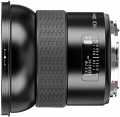

HCD 28mm镜头设计小巧，搭配H系列数码相机的48x36mm传感器使用可以获得最佳效果。其集成的数码镜头校正功能可以通过数码方式消除一切色差、晕影和失真，从而美化原始图像，改善画质。经过处理后的原始图像将获得适合图像渲染的最佳像素清晰度。这一特殊镜头是专为H3D相机的数码使用所设计的。因此，它是不适用于HM 16-32胶片后背或所有1.7倍的增倍镜。
我是装在哈苏H4X机身及飞思IQ180上：锐度从中心到边缘都很好，色彩、层次还可以，但相比我的施耐德28mm镜头都略要逊色。自动对焦快又准，份量太重，价格贵！像场太小，装在飞思IQ180后，如再装个UV镜片的话就有严重暗角了。
份量太重，价格贵！像场太小，装在飞思IQ180后，如再装个UV镜片的话就有严重暗角了。
值得拥有....
满意
没发现
值得拥有的广角头。
中心成像没话说，边角居然也很好，没有摩尔纹，暗角也不明显。
还真没发现，稍微有点重把，没办法，95口径。
满意，很不错的标头，唯一欠缺的就是没有德味吧。
算是最轻便的了，人像很不错。
有点塑料的感觉，缺少德味。